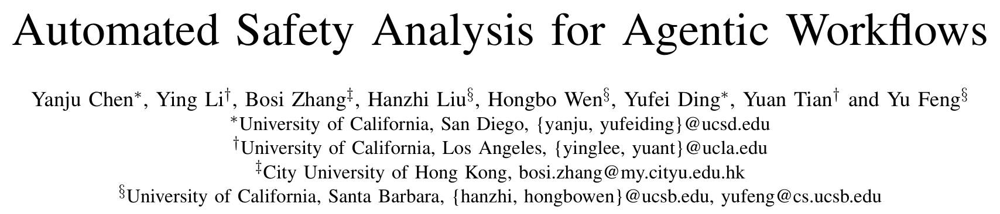
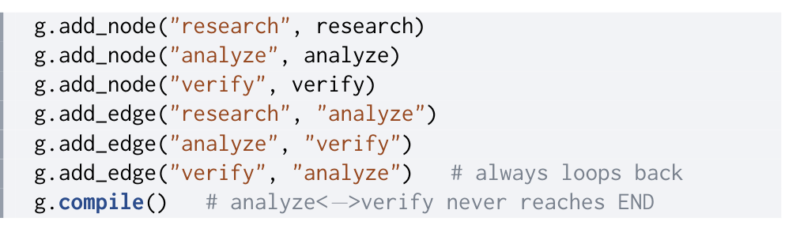
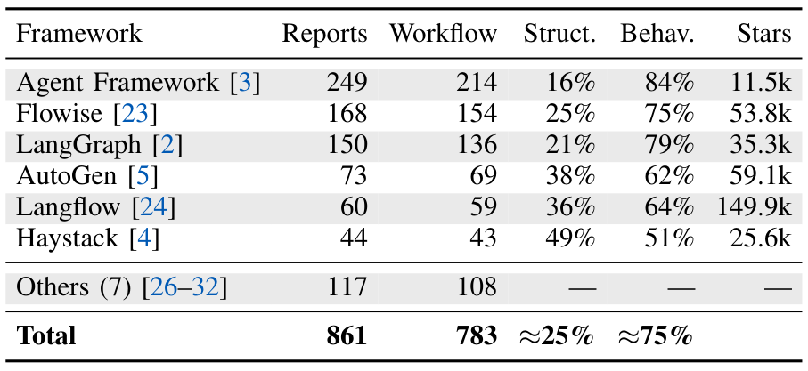
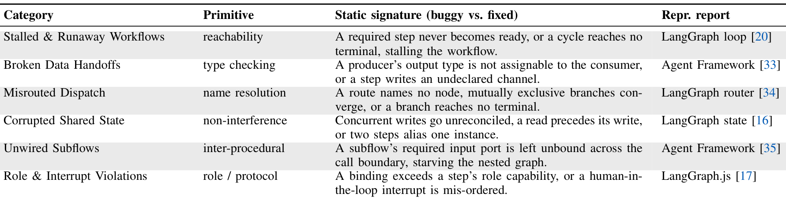
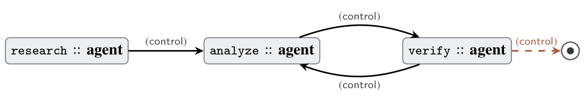
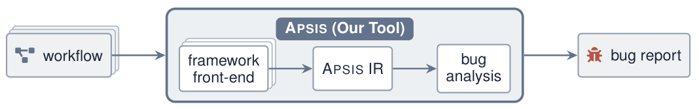
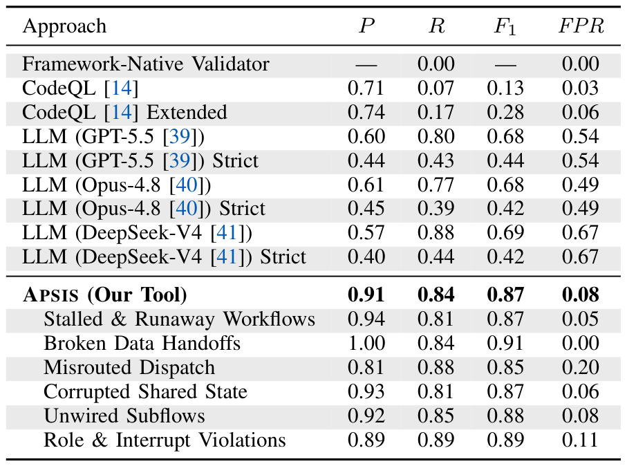
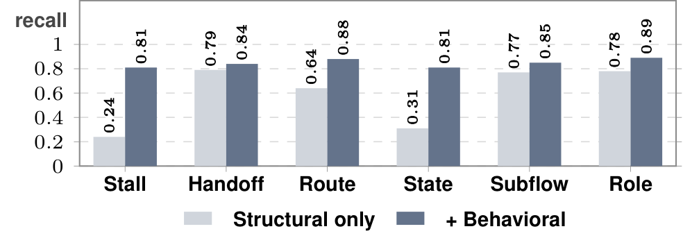
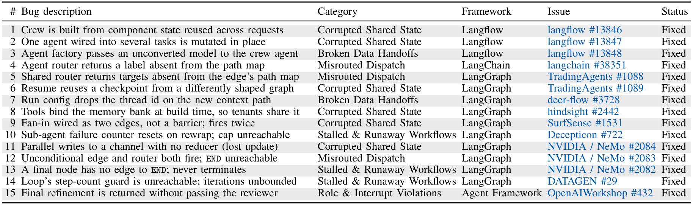

本文看点
01
框架原生校验0检出
02
大模型审查误报五到七成
03
21个真实仓库36个新bug
01
PAPER INFO
论文信息
【论文题目】Automated Safety Analysis for Agentic Workflows
【论文链接】https://arxiv.org/abs/2611.28469
【作者团队】UC San Diego、UCLA、UC Santa Barbara、香港城市大学
【发表会议】ICSE 2027（arXiv 为含附录的扩展版）
【工具与数据】https://doi.org/10.5281/zenodo.24408668

— 论文题头
02
OVERVIEW
导读
说到 Agent 出事，大家第一反应是提示注入，或者模型自己犯傻。这篇 ICSE 2027 的论文开头举了两件事，都不属于这两类：
Devin 接了一个完成不了的部署任务，工作流里没有停止条件，空转了一天多，把算力和 API 预算烧光，什么结果也没交出来。
一个 Cursor Agent 想修一个配置错误，因为工作流给了它权限过大的凭据、又没有人工确认这一步，几秒内删掉了公司的生产数据库和所有备份。
论文的判断是：这两次事故里没有任何注入，也没有哪次 API 调用写错了，问题出在工作流自己的控制和协调逻辑，作者把它叫做 workflow bug。
今天的 Agent 应用大多搭在 LangGraph、Microsoft Agent Framework、AutoGen、Haystack、Flowise、Langflow 这类编排框架上：开发者把模型调用、工具、路由器、共享状态、人工审批节点连成一张图。图连错了，代码照样能编译，照样能跑，只是跑到某个分支才炸。
这篇论文做了三件事：
从 13 个主流框架的 861 份 issue 里整理出第一个 workflow bug 语料库和六类分类法；
做了一个跨框架的静态分析器 APSIS，部署前就能查出 bug，并指到具体哪一步、哪条边；
在 135 对「有 bug / 已修复」的真实工作流上，精确率 0.91、召回率 0.84，单个工作流 0.7 秒；拿去扫 40 多个活跃开源项目，找到 36 个此前未知的 bug，33 个已被维护者修复。
几个对照组的结果更值得看：框架自带的校验器对全部 135 个 bug 一个都没报；CodeQL 召回率只有 0.07；让 GPT-5.5、Opus-4.8、DeepSeek-V4 开最高推理档直接读代码找 bug，召回不低，但修好的版本也有五到七成被报成有 bug。
03
PAIN POINT
痛点：图能编译，不代表能停下来
论文用一个真实事件当贯穿全文的例子：某个多 Agent 研究流水线一次运行累计了 47,000 美元的 API 账单才被发现，而正常有界的一次运行应该在 50 美元以内。原因是一个跑不出来的循环。

— 图1：贯穿全文的例子（LangGraph 写法）。verify 无条件跳回 analyze，analyze 和 verify 之间的循环从没接到终点 END
这六行代码每一行单独看都没问题。research 交给 analyze，analyze 交给 verify，verify 发现问题就让 analyze 重来。错在没有任何一条边从这个循环通往终点，只要进了循环就出不来，两个 Agent 被无限次重新调用。
为什么现有工具都抓不到？论文逐个分析了：
框架自带的校验器只检查节点之间类型能不能对上，图能编译就放行；
通用静态分析（如 CodeQL）看到的是宿主语言里一串 `add_node`、`add_edge` 函数调用，而不是这些调用拼出来的那张图；
运行时护栏或 LLM 裁判要等循环已经在生产环境转起来、钱已经在花的时候才能发现。
这种 bug 要在部署前查出来，必须按框架的执行语义去推理连起来的步骤之间如何相互作用。
04
TAXONOMY
先搞清楚 bug 长什么样
作者翻了 13 个开源编排框架的公开 issue，收集了 861 份报告，排除配置、环境、模型质量问题后，剩下 783 个 workflow bug：根因在工作流的连线逻辑里，且 bug 版和修复版在图上能看出静态差异。

— 图2：各框架调研的 issue 数、其中的 workflow bug 数，以及结构型和行为型的占比
这张表里最关键的是最后两列。作者把 bug 分成两种：
结构型：光看拓扑就能发现，比如路由指向一个不存在的节点、一个没有出口的环；
行为型：图的形状完全正常，问题出在某一步的声明行为上，比如某个输入是不是必填、一个共享通道怎么合并并发写入、某个角色有没有权限调工具。
整体大约 四分之一是结构型，四分之三是行为型。Microsoft Agent Framework 上行为型高达 84%。这个比例直接决定了后面的方法设计：只看节点和边的分析器，天花板就是那四分之一。
作者再从中挑出 31 份讨论最充分的报告，归纳成六类，每一类都对应一个经典的程序分析概念：

— 图3：六类 workflow bug，各自对应的经典分析概念和静态特征
用论文里的真实例子说几类：
停滞和失控（可达性）：LangGraph 里 `add_node` 注册了一个节点但从没连线，`compile()` 一声不吭地通过；或者像上面那样的死循环。
共享状态被破坏（无干扰性）：LangGraph 的 State 里一个字段默认是「最后写入者胜出」，两个并行 worker 同时写，其中一个结果就静默丢失。拓扑上只能看到两个写者，丢不丢取决于这个通道有没有声明合并函数（reducer）。
路由错误（名称解析）：路由函数返回 `"researcher_tool_node"`，但注册的名字是 `"researcher_tools"`，一个拼写错误。
角色和审批违规（权限与协议）：AutoGen 里本该只负责协调发言顺序的 GroupChatManager 被配上了自己的工具，越权；或者两个人工审批节点串在一起、中间没有路由，本该按条件审批的变成了每次都要审。
论文还指出一个现象：LangGraph 里漏写 reducer 和 Flowise 里汇合节点提前触发，本质是同一种并发写冲突；路由目标写成 Python 字符串还是导出 JSON 里的节点 id，也是同一种名称解析错误。同一个 bug 换个框架换个写法而已。
05
INSIGHT
核心洞察
一旦把工作流的连线和框架隐含的执行语义显式地画成一张图，bug 就不再是运行时才发生的事件，而是这张图上一个被违反的静态性质。
拿开头的死循环来说，翻译成图以后，analyze 和 verify 组成的强连通分量里没有任何一条边通往终点，一条声明式规则就能匹配到这个「无界环」，并指出缺的是哪条出口边。

— 图4：同一个工作流翻译成 APSIS 的中间表示。灰框是步骤，箭头是控制边，带圈的点是终点，红色虚线就是缺失的那条出口边
06
METHOD
方法：一张带语义的图，加一套写成规则的 bug

— 图5：APSIS 的三段流水线：各框架的前端把工作流翻译成统一 IR，分析引擎用规则库去匹配，输出定位到具体步骤的 bug 报告
第一步：统一的中间表示（IR）。 不管是 LangGraph 的 Python 构建器、Agent Framework 的链式 API、Haystack 的组件流水线，还是 Flowise、Langflow 导出的可视化 JSON，最后搭出来的都是同一种图。APSIS 把它抽象成五元组：
节点：agent、tool、router、loop、human（人工审批）、subflow（嵌套子流程）、start、end；
带类型的边：数据边、控制边、条件边（带分支标签）、工具绑定、Agent 之间的 handoff、子流程调用；
通道：命名的共享状态，每个通道带一个 reducer，要么「最后写入者胜出」，要么某个合并函数；
行为标注：这是和普通依赖图最大的区别。依赖图只记录「数据流进了 reply」，APSIS 还记录这个输入是不是必填、reply 怎么合并并发写入、这一步的角色允许它做什么；
执行模型：dataflow、bsp（分超步、步间有屏障的批同步并行）、groupChat、visual 四种，同一条规则在不同执行模型下判定方式不同。
各框架的特有标志被前端映射到通用的语义键上，规则里永远不出现框架名。新增一个框架只需要写一个前端，规则库直接复用。
第二步：bug 描述语言（BDL）。 每类 bug 写成一条 Horn 子句，形如「如果满足这些条件，就报告这个元素」。头部绑定的就是要修改的那个节点、端口、边或通道，所以报告能直接定位。论文给了 12 个检测器，覆盖上面六类。几个例子：
RUNAWAY-LOOP：一个强连通分量包含多于一个节点（或有自环），且没有符合该执行模型的出口。可视化框架里要求有显式的循环节点来限界，dataflow 里要求有能逃出去的边；
RACING-CHANNEL-WRITE：某个通道的 reducer 是「最后写入者胜出」，且有两个可能并发的步骤都写它。「可能并发」定义为两步之间互不可达；
OVER-PRIVILEGED-COORDINATOR：角色是 manager，或者是 groupChat 里的路由节点，却声明了自己的工具；
UNGATED-INTERRUPT：两个人工审批节点前后相连，中间没有路由节点。
规则和引擎分离，碰到新的失效模式只需要加一条规则，不用改分析器。
第三步：落地。 后端约 4,900 行 Rust，6 个框架共支持 150 多种构建 API 和节点类型。这些子句本可以交给现成的 Datalog 引擎 Soufflé 求解，但调用外部求解器太慢，作者在 Rust 里自己写了一个专用的检查器。前端不运行工作流，只读框架构建好的图对象。遇到动态路由、动态扇出这种运行时才确定的情况，把所有可能目标都列出来、当作非确定选择；实在解析不了的边，保守地当作不安全处理。
07
EXPERIMENT
实验：它比对照组强在哪
基准怎么造的。 从语料库里挑出 135 个满足三个条件的 bug：根因在连线逻辑里且有静态特征、能用最小工作流复现、有维护者认可的修复。每个 bug 配上修复后的版本，一共 270 个工作流。理想的分析器应该在 bug 版报警、在修复版保持沉默。这个设计让误报率有了实际意义：修好的工作流还报警，就是误报。

— 图6：APSIS 与三类对照组的比较（下半部分是 APSIS 按 bug 类别的拆分）。Strict 行要求大模型报的 bug 类别也正确
这张表里有三个值得细看的对比。
框架自带的校验器：135 个 bug 全部放行，召回率 0。 这些 bug 在宿主语言层面类型都是对的，而原生校验器不检查单分支路由、并发状态合并、角色权限，而且只服务自己的框架。每一个 bug 都通过了框架自己的检查，这是整篇论文最值得记住的一点：「能编译」在工作流世界里几乎什么也不保证。
CodeQL：召回率 0.07。 工作流的图是通过构建 API 的函数调用动态拼出来的，不是语法上的一等结构，标准查询基本看不见；对可视化框架导出的 JSON 完全无能为力。作者额外写了一个直接解析导出图结构的扩展版，召回也只有 0.17，因为它只能看拓扑，抓不到四分之三的行为型 bug。
大模型当审查员：召回高，误报更高。 三个模型都开到最高推理档，只给源码，不让联网、不给工具，按六类逐项判断并给出位置。召回率在 0.77 到 0.88 之间，看起来不错，但修复后的版本有 49% 到 67% 也被报成有 bug。再要求它说对 bug 类别（Strict 行），召回直接腰斩到 0.39 到 0.44。也就是说，大模型的「找到了」里有相当一部分是猜中了「这里有问题」但说不清是什么问题。最强的大模型对照组 F1 是 0.69，APSIS 是 0.87，高出 0.18。
APSIS 在各框架上的精确率 0.83 到 0.96，召回 0.76 到 0.92；单个工作流中位数 0.7 秒，大部分时间花在前端翻译上，完全放得进 CI。
消融：行为标注到底值多少。 这是证明核心洞察成立的那张图。把规则库限制为只看结构的规则，和完整规则库对比各类召回：

— 图7：只用结构规则（浅色）与加上行为规则（深色）后，各类 bug 的召回率
整体召回从 0.50 涨到 0.84，多抓到 46 个 bug。涨幅集中在两类：
停滞和失控：0.24 → 0.81。 很多「卡住」不是图上缺边，而是某个输入被标成必填、却只能由一条从没接上的边来填；或者所有输入都有默认值，导致这一步在上游还没产出时就提前触发。不知道哪些输入必填，就看不出这一步永远等不到。
共享状态被破坏：0.31 → 0.81。 两个并行写者在拓扑上一目了然，但丢不丢数据取决于通道的 reducer。不读 reducer，就只能要么全报（误报爆炸）要么全不报。
反过来，类型不匹配、子流程端口没接这类问题，光靠结构规则就能抓到八成左右，行为标注只是锦上添花。这和前面「四分之三是行为型」的统计互相印证：分析器能看到多少语义，决定了它能抓多少 bug。
08
FIELD
实战：36 个新 bug
作者把 APSIS 跑在 40 多个活跃维护、不在语料库里的开源 Agent 项目上，包括 NVIDIA NeMo Agent Toolkit、LangChain、CopilotKit，在 21 个仓库里找到 36 个此前未知的 bug，33 个已修复，3 个已被确认。有好几个就在框架自己的官方示例里，这些示例本来就是开发者照抄进生产的模板，而且都通过了框架自己的检查。

— 图8：APSIS 新发现的 bug（节选），全部已被维护者修复
论文详细讲了两个：
案例 A：NVIDIA NeMo 的 map-reduce 示例丢数据。 示例把一批数据分发给多个并行的 `create_batch_summary` 步骤，每个都往共享的 `summaries` 通道里写，而这个通道声明成普通 list，没有 reducer。在批同步调度下，同一超步内完成的并发分支会撞在 `summaries` 上：要么一个写入静默覆盖另一个，要么运行时直接抛 `InvalidUpdateError`。整个工作流类型正确、编译干净，只有批次大到触发并发写时才出问题，小数据测试永远测不出来。APSIS 的 RACING-CHANNEL-WRITE 规则静态标出了这个并发写，维护者加上了 reducer。
案例 B：LangChain `create_agent` 里的路由崩溃。 模型步骤后面接一个条件边，路由表里注册了工具步骤和退出节点，但模型步骤本身只在某些配置下才注册。而路由函数在「这一轮所有工具调用都已经有结果」时会返回模型步骤，比如中间件注入了缓存的或预先批准的工具输出。默认配置下这个返回值不在路由表里，运行时报 `KeyError('model')`。APSIS 把路由函数声明的所有可能返回值和路由表逐个比对，标出了这个缺失目标，维护者合并了修复。
翻完整的 36 个清单，一半以上属于共享状态被破坏，而且不少和多租户安全直接相关：工具在构建时就绑定了记忆库，导致所有租户共用一份；一个内存存储被所有并发租户共享；并发运行覆盖了共享客户端的会话令牌；共享的 thread-id 槽位让一次审批恢复到了别人的运行上。这些已经不只是「结果不对」，而是跨用户的数据串用和授权错位。
09
CAVEATS
局限
基准来自「有修复的 bug」。 135 个样本都要求有维护者认可的修复和静态可见的特征，天然偏向那些能用图结构描述清楚的 bug。论文把配置、环境、模型质量问题都排除在外，提示注入也不在范围内。APSIS 是 Agent 安全拼图里的一块，不是全部。
各类之间有差异。 路由错误类误报率 0.20，是六类里最高的；LangGraph 上的召回 0.76、AutoGen 0.79，低于平均。动态构造的部分是保守处理的，代价就是潜在误报。
大模型对照组的设定比较严格。 它们只拿到去掉注释的源码，不能联网、不能执行、没有工具，一次只看一个工作流。真实场景里接上工具的 Agent 审查员可能表现更好，这个对比衡量的是「静态读码」这件事本身。
框架演进快。 引擎语义会随版本漂移。作者称目前的漂移都还在 IR 能表达的范围内，前端更新即可吸收，基准也固定了每个样本的框架版本。
10
TAKEAWAYS
启发与点评
这个巧思能学到什么。 APSIS 本身没有发明新的分析算法：可达性、强连通分量、并发判定、Horn 子句匹配都是几十年的老技术，论文也坦白承认它的六类 bug 和业务流程管理里的工作流网验证一一对应。它真正的贡献在于找对了抽象层：工作流不是「一段 Python 程序」，而是「一张由框架执行语义驱动的图」。站在 Python 层面，CodeQL 看到的是函数调用；站在图层面但不带语义，召回卡在 0.50；只有把 reducer、必填标志、角色权限这些框架隐含规则显式化，老技术才能发挥作用。这个思路对任何「声明式配置 + 隐含运行时语义」的系统都适用，比如 CI 流水线、Kubernetes 编排、IaC。
对搭 Agent 工作流的团队，几件现在就能查的事：
每个循环都要有不依赖模型输出的上界。 论文找到的 bug 里有「循环的步数守卫永远到不了」「只靠模型设置的标志退出、自身没有上界」。只靠模型说「我做完了」来退出，就是把预算交给了模型。
凡是并行写的状态字段，都检查有没有声明合并方式。 LangGraph 里默认是覆盖，并发写会静默丢失，而且只在大批量时才出现。
审查所有「构建时绑定」的共享对象。 记忆库、存储、客户端会话如果在构建图时就创建并绑定，很可能被所有请求和租户共享。
别把官方示例当成安全模板。 36 个 bug 里好几个就在示例里，照抄之前用同样的眼光过一遍。
一个延伸的观察。 前几期我们聊过的 Agent 安全问题大多盯着输入：提示注入、恶意 Skill、MCP 工具投毒，都是「坏东西从外面进来」。这篇把视线拉回到 Agent 自己的骨架上。Cursor 删库那次，没有任何攻击者参与，一张缺了审批节点、给了过大凭据的图就足够造成不可逆的损失。Agent 的安全边界，有一半画在编排图上。而编排框架和它们的官方示例，正在以开源依赖的方式被成千上万个项目复制，一个示例里的连线错误，和一个有漏洞的库一样，会顺着复制传播到下游。部署前用静态分析过一遍编排图，应该像跑单元测试一样成为 Agent 应用 CI 的默认步骤。